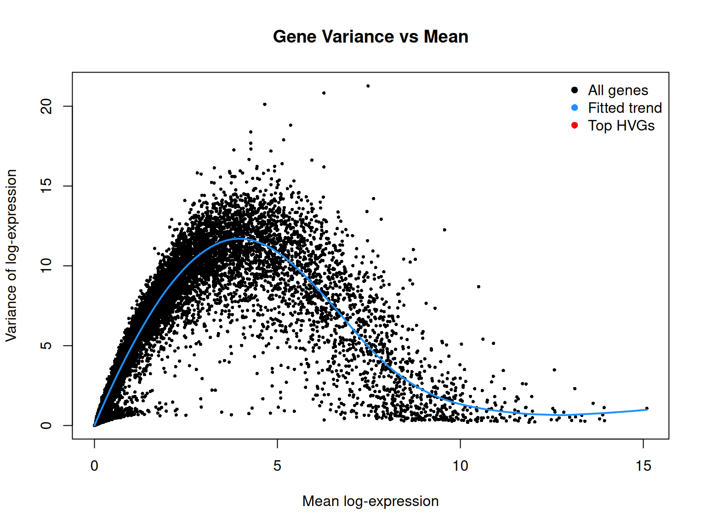
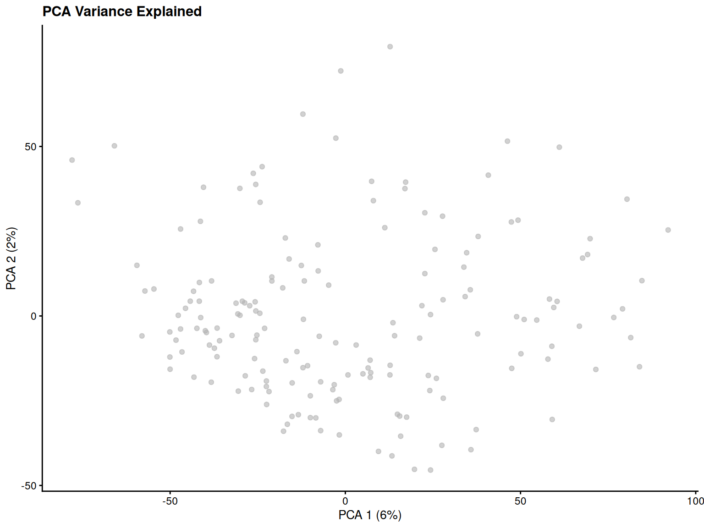
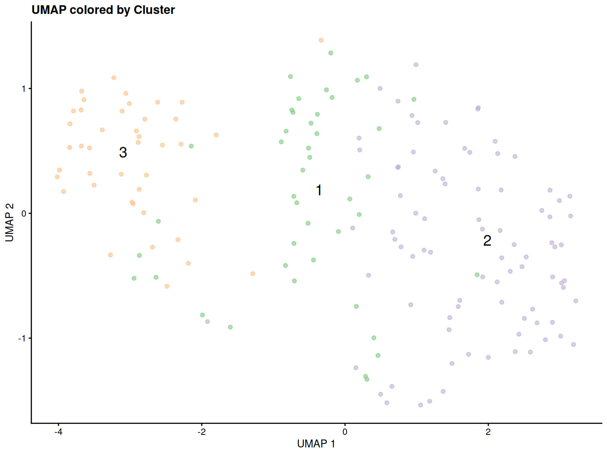
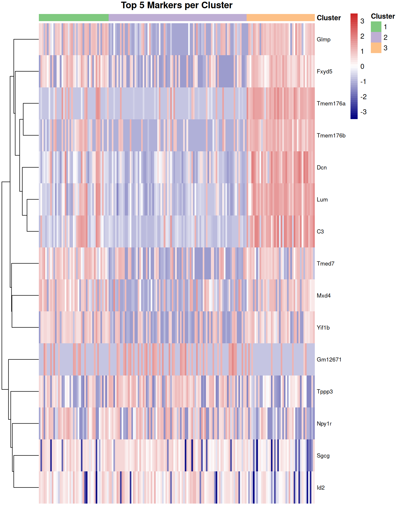
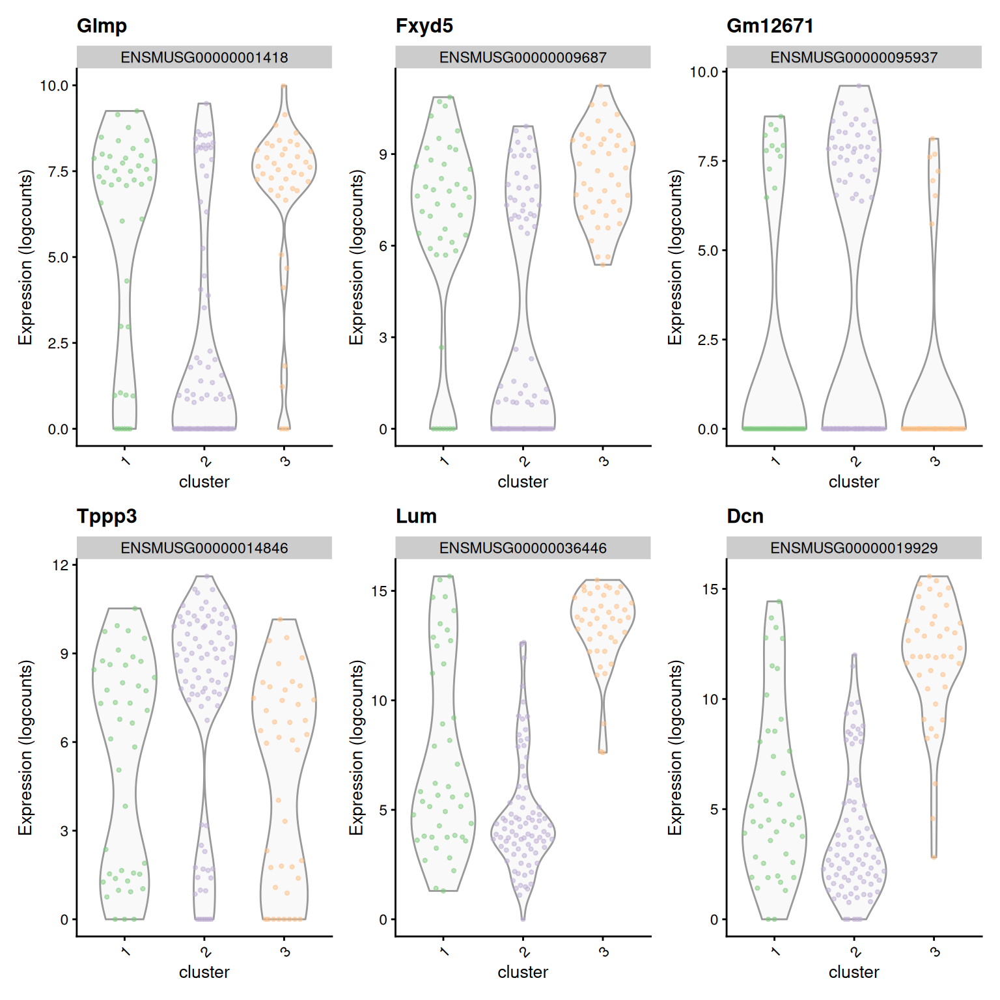

This report details the downstream analysis of the filtered
single-cell RNA-seq data, starting from the quality-controlled
SingleCellExperiment object (sce_filtered).
The analysis includes:
We load the sce_filtered object generated in the
previous QC step.
sce_filtered <- readRDS("sce_filtered_presentation.rds")
if (!exists("sce_filtered")) {
stop("The 'sce_filtered' object was not found. Please load it from 'sce_filtered.rds' or ensure it's in the environment.")
}The filtered object contains 38886 genes and 170 cells.
We normalize the raw counts to account for differences in library
size and capture efficiency between cells. We use the
computeLibraryFactors function from scran
followed by logNormCounts from scater.
The logcounts assay now contains normalized expression
values suitable for downstream analysis.
We focus downstream analysis on genes that exhibit high biological variability across cells.
set.seed(123)
gene_var <- modelGeneVar(sce_filtered)
n_hvgs <- 2500
top_hvgs <- getTopHVGs(gene_var, n = n_hvgs)
plot(gene_var$mean, gene_var$total, pch = 16, cex = 0.5,
xlab = "Mean log-expression", ylab = "Variance of log-expression")
curve(metadata(gene_var)$trend(x), col = "dodgerblue", add = TRUE, lwd=2)
points(gene_var$mean[top_hvgs], gene_var$total[top_hvgs], pch = 16, col = "red", cex=0.5)
legend("topright", legend=c("All genes", "Fitted trend", "Top HVGs"),
pch=16, col=c("black", "dodgerblue", "red"), bty="n")
title("Gene Variance vs Mean")
We selected the top 2500 HVGs for dimensionality reduction.
We perform PCA on the log-normalized counts, using only the selected HVGs.
set.seed(456)
sce_filtered <- runPCA(sce_filtered,
subset_row = top_hvgs,
ncomponents = 50,
BSPARAM = BiocSingular::RandomParam())
plotReducedDim(sce_filtered, dimred = "PCA",
colour_by = NULL) +
ggtitle("PCA Variance Explained") 
PCA was performed using the HVGs. The variance explained plot helps decide how many PCs capture significant biological variation. We will proceed using the top 20 PCs.
We perform graph-based clustering on the PCA reduced dimensions.
set.seed(789)
snn_graph <- buildSNNGraph(sce_filtered,
k = 10,
use.dimred = "PCA",
BPPARAM = bp_param,
type = "jaccard")
clusters <- igraph::cluster_walktrap(snn_graph)$membership
sce_filtered$cluster <- factor(clusters)The analysis identified 3 clusters. The table generated in the hidden chunk shows the number of cells assigned to each cluster.
We use UMAP to visualize the high-dimensional data in two dimensions.
set.seed(1011)
sce_filtered <- runUMAP(sce_filtered,
dimred = "PCA",
n_dimred = npcs_to_use,
BPPARAM = bp_param)
num_clusters <- length(levels(sce_filtered$cluster))
if (num_clusters > length(cluster_colors)) {
umap_colors <- rep(cluster_colors, length.out = num_clusters)
} else {
umap_colors <- cluster_colors[1:num_clusters]
}
names(umap_colors) <- levels(sce_filtered$cluster)
plotReducedDim(sce_filtered, dimred = "UMAP", colour_by = "cluster", text_by = "cluster") +
scale_color_manual(values = umap_colors) +
ggtitle("UMAP colored by Cluster") +
theme(legend.position = "none") 
The UMAP plot shows the separation of the identified cell clusters in two dimensions.
We identify marker genes for each cluster using
scran::findMarkers.
set.seed(1213)
marker_results <- findMarkers(sce_filtered,
groups = sce_filtered$cluster,
test.type = "t",
direction = "up",
lfc = 1,
pval.type = "some",
BPPARAM = bp_param)
n_top_markers_show <- 5
metadata(sce_filtered)$markers <- marker_resultsMarker genes were identified for each cluster. The tables (generated invisibly above but summarized in section 8.3) show the top 5 upregulated genes for each cluster based on LogFC.
We visualize the expression of the top marker genes.
n_heatmap_markers <- 5
top_markers_list <- list()
for (cluster_id in names(marker_results)) {
markers_df <- as.data.frame(marker_results[[cluster_id]])
if ("symbol" %in% colnames(rowData(sce_filtered))) {
markers_df$symbol <- rowData(sce_filtered)[rownames(markers_df), "symbol"]
markers_df$display_name <- ifelse(is.na(markers_df$symbol) | markers_df$symbol == "", rownames(markers_df), markers_df$symbol)
} else {
markers_df$display_name <- rownames(markers_df)
}
top_markers_list[[cluster_id]] <- markers_df %>% arrange(desc(summary.logFC)) %>% head(n_heatmap_markers) %>% pull(display_name)
}
all_top_markers <- unique(unlist(top_markers_list))
if ("symbol" %in% colnames(rowData(sce_filtered))) {
rd <- as.data.frame(rowData(sce_filtered)) %>% filter(!is.na(symbol) & symbol != "")
symbol_to_ensembl <- setNames(rd$gene_id, rd$symbol)
symbol_to_ensembl <- symbol_to_ensembl[!duplicated(names(symbol_to_ensembl))]
marker_ensembl_ids <- sapply(all_top_markers, function(x) {
id <- symbol_to_ensembl[x]
if (is.na(id)) {
if (x %in% rownames(sce_filtered)) return(x) else return(NA)
}
return(id)
}, USE.NAMES = FALSE)
marker_ensembl_ids <- marker_ensembl_ids[!is.na(marker_ensembl_ids)]
} else {
marker_ensembl_ids <- all_top_markers
}
marker_ensembl_ids <- intersect(marker_ensembl_ids, rownames(sce_filtered))
if (length(marker_ensembl_ids) > 0) {
marker_logcounts <- assay(sce_filtered, "logcounts")[marker_ensembl_ids, , drop=FALSE]
cell_order <- order(sce_filtered$cluster)
annotation_col <- data.frame(
Cluster = sce_filtered$cluster[cell_order]
)
rownames(annotation_col) <- colnames(sce_filtered)[cell_order]
num_clusters <- length(levels(sce_filtered$cluster))
if (num_clusters > length(cluster_colors)) {
anno_colors_vec <- rep(cluster_colors, length.out = num_clusters)
} else {
anno_colors_vec <- cluster_colors[1:num_clusters]
}
names(anno_colors_vec) <- levels(sce_filtered$cluster)
annotation_colors <- list(Cluster = anno_colors_vec)
pheatmap(marker_logcounts[, cell_order],
scale = "row",
cluster_rows = TRUE,
cluster_cols = FALSE,
show_colnames = FALSE,
annotation_col = annotation_col,
annotation_colors = annotation_colors,
color = colorRampPalette(c("navy", "white", "firebrick3"))(50),
main = paste("Top", n_heatmap_markers, "Markers per Cluster"),
fontsize_row = 8,
labels_row = sapply(rownames(marker_logcounts), function(x) {
sym <- rowData(sce_filtered)[x, "symbol"]
if (!is.null(sym) && !is.na(sym) && sym != "") return(sym) else return(x)
})
)
}
The heatmap displays the scaled log-normalized expression of the top marker genes across cells, ordered by cluster assignment. Rows (genes) are clustered, while columns (cells) are grouped by cluster.
if (exists("marker_results") && !is.null(marker_results) && length(marker_results) > 0 && exists("top_markers_list")) {
markers_to_plot_names <- c()
n_violin_markers_per_cluster <- 2
for (cluster_id in names(top_markers_list)) {
markers_to_plot_names <- c(markers_to_plot_names, head(top_markers_list[[cluster_id]], n_violin_markers_per_cluster))
}
markers_to_plot_names <- unique(markers_to_plot_names)
if (length(markers_to_plot_names) > 0) {
possible_features_ids <- rownames(sce_filtered)
possible_features_symbols <- character(0)
if ("symbol" %in% colnames(rowData(sce_filtered))) {
possible_features_symbols <- na.omit(rowData(sce_filtered)$symbol)
possible_features_symbols <- possible_features_symbols[possible_features_symbols != ""]
}
features_for_plot_ids <- c()
symbol_map_for_plotting <- list()
for (marker_name in markers_to_plot_names) {
ensembl_id <- NA
display_name <- marker_name
if (marker_name %in% possible_features_ids) {
ensembl_id <- marker_name
if ("symbol" %in% colnames(rowData(sce_filtered))) {
symbol_val <- rowData(sce_filtered)[ensembl_id, "symbol"]
if (!is.na(symbol_val) && symbol_val != "") {
display_name <- symbol_val
}
}
} else if ("symbol" %in% colnames(rowData(sce_filtered)) && marker_name %in% possible_features_symbols) {
ensembl_id <- rownames(sce_filtered)[match(marker_name, rowData(sce_filtered)$symbol)]
display_name <- marker_name
}
if (!is.na(ensembl_id) && ensembl_id %in% rownames(sce_filtered)) {
features_for_plot_ids <- c(features_for_plot_ids, ensembl_id)
symbol_map_for_plotting[[ensembl_id]] <- display_name
}
}
features_for_plot_ids <- unique(features_for_plot_ids)
if(length(features_for_plot_ids) > 0) {
plot_list <- list()
num_clusters <- length(levels(sce_filtered$cluster))
if (num_clusters > length(cluster_colors)) {
violin_colors_vec <- rep(cluster_colors, length.out = num_clusters)
} else {
violin_colors_vec <- cluster_colors[1:num_clusters]
}
names(violin_colors_vec) <- levels(sce_filtered$cluster)
for (feature_id in features_for_plot_ids) {
feature_display_name <- symbol_map_for_plotting[[feature_id]]
p <- plotExpression(sce_filtered,
features = feature_id,
x = "cluster",
colour_by = "cluster",
point_alpha = 0.5,
point_size = 0.8,
add_legend = FALSE
) +
scale_color_manual(values = violin_colors_vec) +
theme(axis.text.x = element_text(angle = 45, hjust = 1)) +
ggtitle(feature_display_name)
plot_list[[feature_display_name]] <- p
}
if (length(plot_list) > 0) {
n_plots <- length(plot_list)
n_cols <- min(3, ceiling(sqrt(n_plots)))
print(wrap_plots(plot_list, ncol = n_cols))
}
}
}
}
These violin plots illustrate the expression distribution of selected top marker genes across all identified clusters.
n_markers_table <- 15
if (exists("marker_results") && !is.null(marker_results) && length(marker_results) > 0) {
for (cluster_id in names(marker_results)) {
cat("\n### Cluster ", cluster_id, "\n")
markers_df <- as.data.frame(marker_results[[cluster_id]])
if ("symbol" %in% colnames(rowData(sce_filtered))) {
markers_df$symbol <- rowData(sce_filtered)[rownames(markers_df), "symbol"]
} else {
markers_df$symbol <- rownames(markers_df)
}
markers_df <- markers_df %>%
mutate(display_symbol = ifelse(is.na(symbol) | symbol == "", rownames(markers_df), symbol))
top_markers_table <- markers_df %>%
arrange(desc(summary.logFC)) %>%
slice_head(n = n_markers_table) %>%
select(
Gene = display_symbol,
LogFC = summary.logFC,
PValue = p.value
) %>%
mutate(
LogFC = round(LogFC, 3),
PValue = format.pval(PValue, digits = 2, eps = 1e-10)
)
if (nrow(top_markers_table) > 0) {
table_caption <- paste("Top", nrow(top_markers_table), "Upregulated Markers for Cluster", cluster_id)
print(knitr::kable(top_markers_table, caption = table_caption, row.names = FALSE))
cat("\n\n")
}
}
} else {
cat("\nMarker identification results (`marker_results`) not found or empty. Cannot display tables.\n")
}| Gene | LogFC | PValue |
|---|---|---|
| Glmp | 3.310 | 0.00025 |
| Fxyd5 | 3.184 | 0.00113 |
| Tmed7 | 3.138 | 0.00011 |
| Mxd4 | 3.070 | 0.00062 |
| Yif1b | 2.946 | 0.00183 |
| H2-K1 | 2.908 | 0.00470 |
| Sra1 | 2.896 | 0.00162 |
| C1ra | 2.865 | 0.00308 |
| Il6st | 2.850 | 0.00167 |
| P3h3 | 2.839 | 0.00118 |
| G3bp1 | 2.786 | 0.00195 |
| Nipbl | 2.761 | 0.00157 |
| H13 | 2.755 | 0.00298 |
| Stk16 | 2.746 | 0.00916 |
| Kif1b | 2.745 | 0.00346 |
| Gene | LogFC | PValue |
|---|---|---|
| Gm12671 | 2.569 | 0.0099 |
| Tppp3 | 2.519 | 0.0226 |
| Npy1r | 2.143 | 0.0791 |
| Sgcg | 1.905 | 0.1008 |
| Id2 | 1.706 | 0.1517 |
| E030013I19Rik | 1.691 | 0.1435 |
| Pcp4l1 | 1.666 | 0.2761 |
| Gstm1 | 1.637 | 0.0816 |
| Tpm2 | 1.632 | 0.0267 |
| Myh11 | 1.630 | 0.1126 |
| Ogn | 1.614 | 0.1916 |
| Ppp1r14a | 1.599 | 0.1037 |
| Gucy1b1 | 1.595 | 0.2160 |
| Sost | 1.589 | 0.0967 |
| Atp6-ps | 1.578 | 0.4043 |
| Gene | LogFC | PValue |
|---|---|---|
| Lum | 8.591 | < 1e-10 |
| Dcn | 7.945 | < 1e-10 |
| C3 | 7.328 | < 1e-10 |
| Tmem176a | 6.988 | < 1e-10 |
| Tmem176b | 6.861 | < 1e-10 |
| Serpina3n | 6.771 | < 1e-10 |
| Vcam1 | 6.626 | < 1e-10 |
| Lcn2 | 6.243 | 1.3e-10 |
| C1s1 | 5.915 | < 1e-10 |
| Frzb | 5.842 | < 1e-10 |
| C1ra | 5.577 | < 1e-10 |
| Timp1 | 5.521 | < 1e-10 |
| Ly6e | 5.506 | < 1e-10 |
| Cxcl12 | 5.431 | < 1e-10 |
| Osmr | 5.242 | < 1e-10 |
Cluster 1 is characterized by expression of Glmp, Fxyd5, Tmed7, Mxd4, and Yif1b. These markers suggest a transitional state of SMCs with inflammatory and secretory properties. Fxyd5 (dysadherin) plays roles in cell migration, adhesion, and inflammatory responses. Tmed7 and Yif1b are involved in protein trafficking and secretory pathways. This cluster likely represents SMCs that have downregulated their contractile phenotype and adopted an inflammatory or secretory state. Such phenotypic switching is consistent with the modulated SMC populations that accumulate in atherosclerotic lesions and participate in the inflammatory process (1).
Cluster 2 expresses Gm12671, Tppp3, Npy1r, Sgcg, and Id2. This gene signature suggests cells retaining some contractile or progenitor-like properties. Tppp3 is associated with microtubule organization in contractile cells, while Sgcg (sarcoglycan gamma) is a component of the dystrophin-glycoprotein complex found in muscle cells. Id2 (Inhibitor of DNA binding 2) is known to maintain cells in a less differentiated state by inhibiting basic helix-loop-helix transcription factors that drive differentiation.
This cluster likely represents SMCs that retain some contractile properties or exist in a progenitor-like state, possibly similar to the mature SMC populations described in previous single-cell studies of atherosclerotic lesions that express markers such as Cnn1 (1). These cells may represent a more conserved SMC phenotype that has not yet undergone extensive modulation.
Cluster 3 expresses Lum, Dcn, C3, Tmem176a, and Tmem176b. This cluster clearly represents fibroblast-like modulated SMCs (FMCs), a well-characterized phenotype of modulated SMCs in atherosclerosis. Lum (lumican) is an established marker of fibroblast-like modulated SMCs that have lost ACTA2 expression, as identified in previous scRNA-seq studies of both mouse and human atherosclerotic plaques (1, 2). Dcn (decorin) is another extracellular matrix protein often co-expressed with lumican. The expression of C3 (complement component 3) and the immune-modulatory transmembrane proteins Tmem176a and Tmem176b suggests these cells also participate in inflammatory processes.
Recent studies have confirmed that Lum-expressing cells represent fully modulated SMCs that have undergone significant phenotypic switching and contribute to extracellular matrix production in the plaque (2). These cells are distinct from contractile SMCs and accumulate during advanced stages of atherosclerosis, particularly in fibroatheromas (2).
This analysis successfully normalized the filtered scRNA-seq data,
identified biologically variable genes, performed dimensionality
reduction and clustering, and identified distinct marker genes for each
cluster. The sce_filtered object now contains normalized
data (logcounts), dimensionality reduction results (PCA,
UMAP), cluster assignments (colData$cluster), and marker
gene lists (metadata$markers), providing a foundation for
further biological interpretation and investigation.